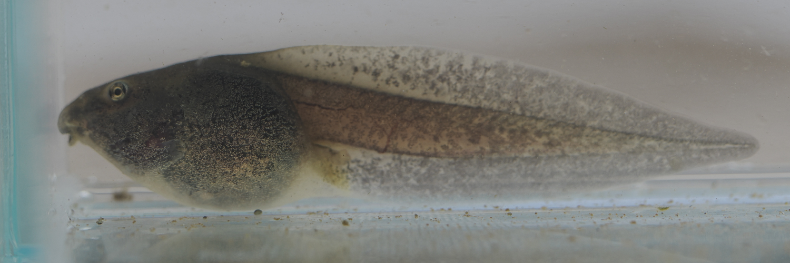

オタマジャクシの観察記録について
各種のオタマジャクシを、産卵直後の卵からオタマジャクシ、変態してカエルになるまで、日々の変化をそのまま写真を中心に記録しています。特別なまとめではなく、観察の過程そのものを残しています。



オタマラボは、オタマジャクシとカエルの観察記録を残すためのサイトです。
子供のころからオタマジャクシを見るのが好きで、長く見てきましたが、 いまでも新しい発見があり、そのたびにもっと知りたいという気持ちが大きくなっていきます。
そのための観察と記録を、自分自身の整理としてまとめています。
各種のオタマジャクシを、産卵直後の卵からオタマジャクシ、変態してカエルになるまで、日々の変化をそのまま写真を中心に記録しています。特別なまとめではなく、観察の過程そのものを残しています。
観察をよりよく行うために、オタマジャクシのフィギュアを制作しています。 形を理解するための試みとして作り始めたものですが、思いのほか観察に役立っています。
子供向けの色塗り体験でも好評だったため、 興味のある方は、よければどのようなものかを見てください。